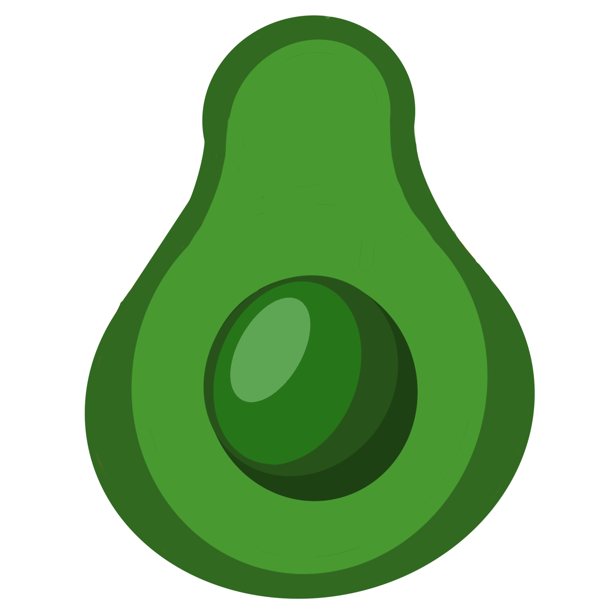
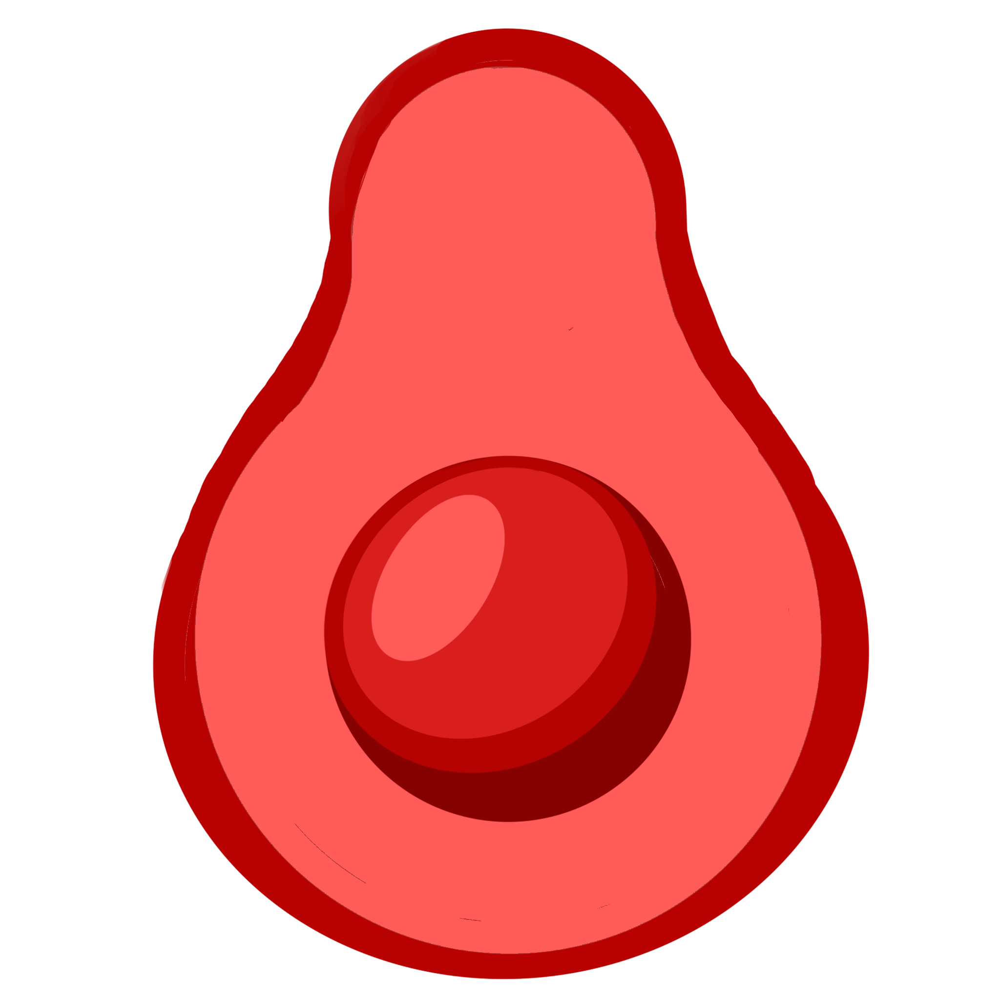
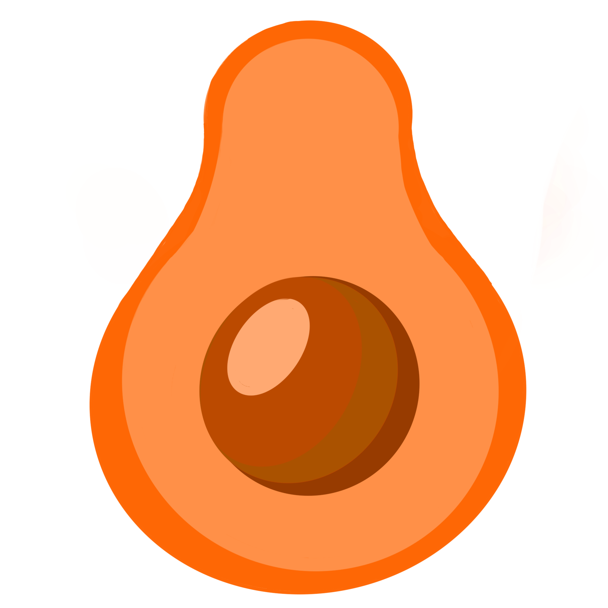

Macarrones
Los macarrones a la boloñesa son un delicioso plato italiano acompañado de la muy sabrosa salsa. Esta salsa
es típica de las comarcas cercanas a Bolonia, ciudad del norte de Italia, donde las pastas son el plato estrella.
¡Con este plato seguro que no fallas, a todo el mundo le encanta!

Sushi
El sushi es uno de las platos más reconocidos de la gastronomía japonesa, reconocido internacionalmente y en creciente popularidad
entre los jovenes.
¡El sushi es un plato muy rico y saludable perfecto para acompañar una comida la gente que quieres!

Red Velvet
De origen desconocido, la misteriosa tarta Red Velvet es un famoso postre que actualmente inunda pastelerías y cafeterías de todo el mundo.
Hoy podrás hacer esta deliciosa tarta en tu propipa casa, ¿te animas?
